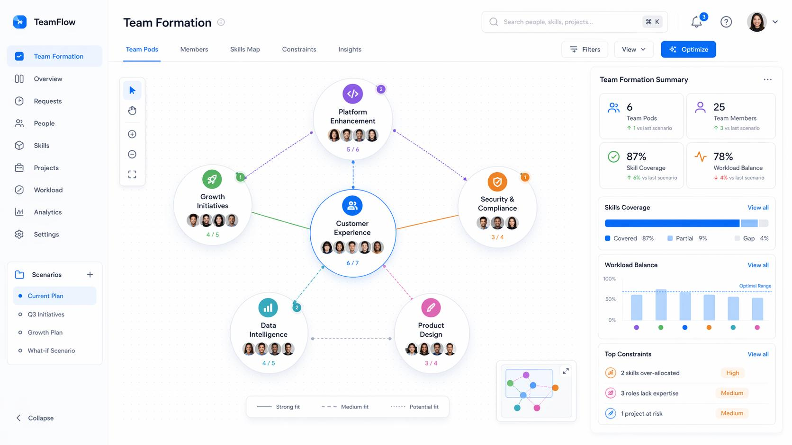
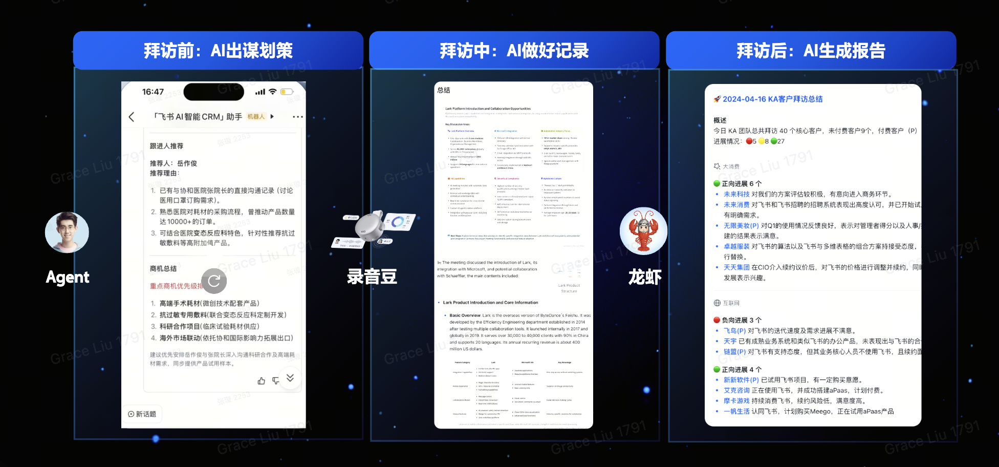
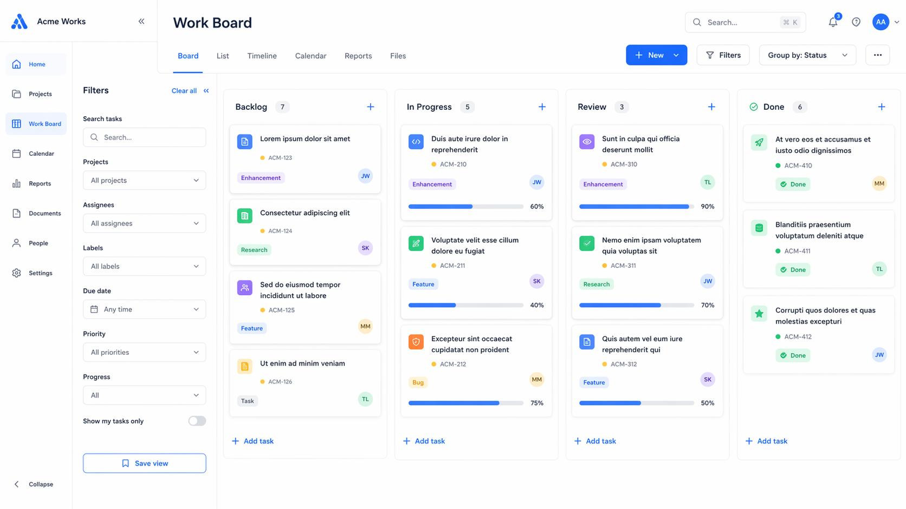
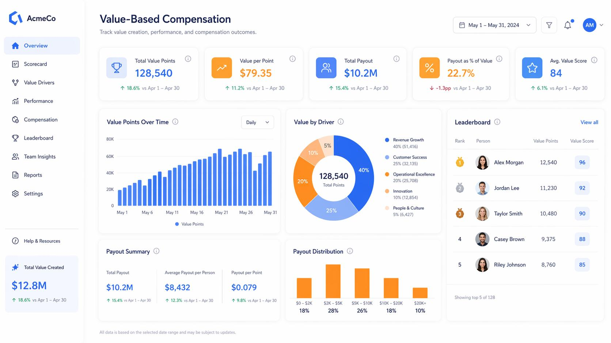
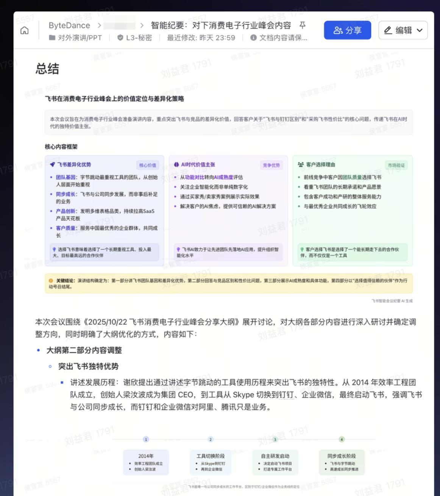
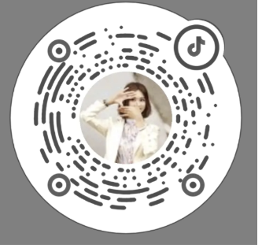

所有工具与技术，最终都不是为了炫技，而是为了服务组织能力与商业结果。
而在这场转型里，HR 不该缺席 —— 反而是那个最该冲在最前面的人。
分享人：刘益君
致力于探索组织和人力资源管理的最佳实践，通过组织数字化、HR 产品化，推动企业管理的持续进化。愉悦，也是一种生产力！
而这两年，大家谈 AI 的方式变了 —— 从比"用什么模型 / 工具"（技术问题），
转向焦虑"流程怎么改、中层怎么办、怎么考核、怎么分钱"。AI 的问题，正在从技术问题，变成组织问题。
任何工具，只要开始影响流程、架构、分工、权力边界和文化，它就不再是技术问题，
而是最难的组织问题。今天的主线只有一句话 ——「始于技术，终于组织」。
AI 始于一项技术，但终将落到组织的重构上；
工具与技术，最终都要落在组织能力与商业结果上。这是贯穿今天全场的一句话主线。
AI 落地真正的拦路虎是组织，不是技术。
先看清 AI 原生组织长什么样，再看清哪些东西 AI 永远替代不了。
“业务加 AI，它的上限就 30%……真正这种 AI 加的场景，它的是下限，就是 10 倍。”
不必纠结"我们是不是 AI 原生公司"（多数老企业天然不是），这只是给出一个可追的方向。
关键提醒：问题不是"我们是不是 AI 原生"，而是 —— 能不能长出 AI 原生的某些特征。
技术可以很快，组织一定很慢 —— 大组织的变革，是一场需要耐心的长跑。
管理动作会被大量重写，但有三件事，AI 永远替代不了人：
真正的分水岭：你愿不愿意，真的去动组织。
先看金融科技公司 Block 为什么敢动中层、动流程、动结构；
再把它提炼成一张给 HR 的"转型操作清单"。
最保守的金融行业，却做了最激进的转型 —— 人员从 ~1.3 万 → 1 万 → ~6 千。真正的转型从来不舒服。
不再以固定部门划分，而是围绕任务动态组建"业态团队"。

砍掉只做信息上传下达的中间层，让决策更贴近一线。
假设 AI 已在场，从零重画流程，而不是给旧流程提速。

拆掉固化的岗位说明书，按价值重新组合任务包。

激励从"按岗位付薪"转向"按价值付薪"。

以"透明"为底座，重建信任、协作与创造的文化。

当岗位边界消融，激励必须重新找到衡量价值的坐标。
三维合一 = 给"液态组织"装上公平且激励创造的分配引擎。
全场最"实"的一段。把前面的理念，落成一套可用、可复制的 AI + HR 实践 ——
从底层理念，到选用育留全流程，再到客户实证与落地心得。
生产力 × 生产工具 = 生产结果；企业运作的本质，是「一连串决策的集合」。
| 环节 | 痛点 | 飞书 / 字节的 AI 实践 |
|---|---|---|
| 选招聘 | 海量简历、跨国语言、识人慢 | 人岗匹配星级、人才画像、相似候选人推荐、AI 找人（全局语义搜索）；生僻字 / 公司 / 学校信息增强；智能面试题推荐；跨国面试用母语 + 实时双语字幕，把精力放回"看人" |
| 用任用 | OKR 质量参差、会议低效 | 全员 OKR 公开透明 + AI 诊断质量与范例建议；智能纪要自动生成结论待办（件件有回应、事事有着落）；多维表格 × AI；销售助手语音转 CRM、每日 AI 销售战报聚焦异常 |
| 育培养 | 培训触达难、知识沉睡 | 从"人找知识"到"知识找人"；术语下划线即查释义 / 文档 / 接口人；SOP / 客服 / 销售赋能场景；AI 模拟打单教练，即时、个性化学习 |
| 留评估 | 360 环评不公、组织情绪难感知 | 按协作紧密度智能推荐环评人（避免"饭搭子"互评）；"手松手紧"尺度校准；人才英雄卡；舆情 AI 语义聚类，实时量化感知"组织温度"、提前干预 |
把 IM、日历、文档、会议、邮箱、OKR、招聘、绩效打通，全球统一工作方式；并以"大赛"形式发动全员拥抱 AI。
直接回答大家最焦虑的问题 ——
AI 时代，HR 到底该干什么？会不会被替代？怎么跃迁？
现实：老板不懂又特别忙，把"全员学 AI"直接压给 CHO；文化阻力、组织阻力，最后都要 HR 来化解。
好消息："引入新工具 + 做变革管理"，本就是 HR 最擅长的事，工具门槛还在越做越低。HR 有天然优势。
AI 可以帮你总结、搜索、生成（外包"思想体力劳动"）；但决定雇谁、把谁放在核心位置的洞察力、同理心、人生智慧，AI 替代不了。
CAIO ≈ CIO 与 CHO 的融合体 —— 既懂 AI，又懂组织 / 人才 / 文化变革，是"企业智能化转型的一号位"。
谁更有机会？CHO 更有机会 —— HR 补的是"短板"，建立基本判断力即可；过度技术化的 CIO 反而要补"人性人情"软技能。
更彻底的判断：未来不是"第二曲线"，大家都在同一条赛道，只是谁先跨过去。
真正的转型，不是把 AI 装进旧组织里，
而是借由 AI，重新理解什么是组织、什么是人、什么是价值。
把思考转化为下周一就能启动的动作。
如果今天的分享给你带来一点启发，欢迎关注「益君-WisdomNexus」——视频号、公众号、抖音，
我们一起把 AI 时代「组织与 HR」的思考继续聊下去。

愉悦，也是一种生产力！ 期待在评论区与私信里，与你相遇。